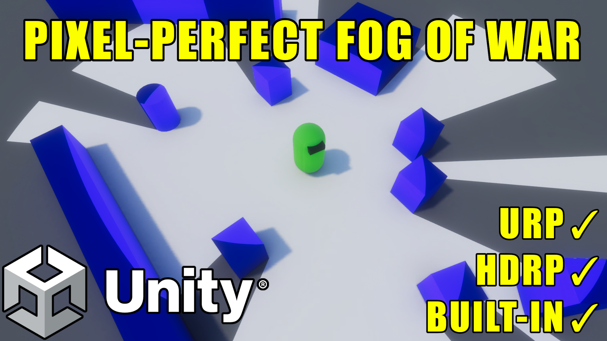

Overview

What is Pixel-Perfect Fog Of War?
Pixel-Perfect Fog Of War is a dynamic line-of-sight Fog of War solution for Unity. Revealers cast rays to compute true line of sight around obstacles, and the fog is rendered as a full-screen camera effect that stays perfectly sharp at any world size — there is no fog texture to run out of resolution.
It works in both 2D and 3D, supports the Built-In, URP, and HDRP render pipelines, and uses Unity's Burst, Jobs, Collections, and Mathematics packages to keep line-of-sight calculations fast even with many revealers.
How It Works
The system has three core pieces:
- Fog Of War World — a single manager component in your scene. It owns all global fog settings, drives revealer updates, and renders the fog.
- Revealers — objects that reveal the fog around them based on line of sight. Vision is shaped by radius, angle, height, and occlusion.
- Hiders — objects that are hidden when they fall outside every revealer's line of sight (enemy units, loot, etc.).
The fog itself can be sampled two ways — Pixel-Perfect (per-pixel, unlimited world size) or Texture Storage (render-texture backed, enabling memory/regrow effects). See Fog Sample Modes.
Key Features
- Pixel-perfect, resolution-independent fog that stays sharp at any world scale
- Burst-accelerated raycast line of sight with accurate edge and corner detection
- 2D and 3D support, with selectable game-plane orientation (XZ / XY / ZY)
- Built-In, URP, and HDRP render pipeline support
- Multiple fog appearances — Solid Color, Grayscale, Blur, Texture, and Outline
- Hard and Soft fog, with edge softening, pixelation, and dithering
- Hiders — hide objects outside line of sight, with built-in and custom behaviors
- Fog regrow & revealer fading (Texture Storage mode) for fog-of-war "memory"
- Minimap texture generation for UI maps
- Save / load of explored fog state
- Scales to thousands of revealers with spatial acceleration, time-sliced updates, static revealers, and staged GPU uploads
Supported Platforms
| Capability | Support |
|---|---|
| Render Pipelines | Built-In (Legacy), URP, HDRP |
| Dimensions | 2D and 3D |
| Unity Version | 2019+ (latest LTS recommended) |
| Dependencies | Burst, Collections, Mathematics |
Note
URP and HDRP support is installed from the included FOW-URP and FOW-HDRP packages. See Render Pipeline Setup.
Requirements
- Unity Version: 2019.4 or newer
- Packages: Burst, Collections, and Mathematics (installed via the Package Manager)
- Render Pipeline: Built-In, URP, or HDRP
Support the Developer
Pixel-Perfect Fog Of War is built by a small creator. If you enjoy it, please consider leaving a review on the Asset Store — it makes a huge difference. You can also wishlist Super Ultimate Party Game on Steam to show your support.
Need help? See Support to join the Discord.